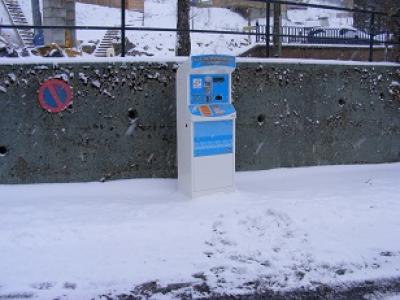

ASN = Aire de services avec stationnement nuit possible de :
LE MONT DORE
(N° 854)
Accès/adresse :
Avenue des Crouzets
Camping Les Crouzets
63240 LE MONT DORE
Camping Les Crouzets
63240 LE MONT DORE
Latitude : (Nord) 45.57728° Décimaux ou 45° 34′ 38′′
Longitude : (Est) 2.80439° Décimaux ou 2° 48′ 15′′
Tarif : 2016
C-C, services, électricité 6 A : 11 €
7 jours : 60 €
Paiement par carte bancaire
Type de borne : FLOT BLEU
Services :


Autres informations :
100 emplacements avec électricité
Tél : +33(0)473 652 160
camping.crouzets@orange.fr
http://www.sancy.com/hebergements/detail/7412/le-mont-dore/aire-d-accueil-des-crouzets
Derrière l'accueil du camping municipal des Crouzets
Le 29/02/2016 par Snoopy
Le 10/10/2015 par lagalette
Le 10/10/2015 par lagalette
Le 10/02/2015 par Snoopy
Le 16/03/2013 par manu4402

Le 16/03/2013 par manu4402
de
jm
le 21/02/2016 :
§Cela fait la quatrième année que je viens l hiver. Aire qui s"améliore au fil du temps plate forme de vidange en construction espérant que le problème de l"eau pour remplir sera améliorer petit débit .
Le prix actuel est de 11€les 24h ou bien 60€ les 7jours Merci à la ville du Mont Dore
§Cela fait la quatrième année que je viens l hiver. Aire qui s"améliore au fil du temps plate forme de vidange en construction espérant que le problème de l"eau pour remplir sera améliorer petit débit .
Le prix actuel est de 11€les 24h ou bien 60€ les 7jours Merci à la ville du Mont Dore
de
Jacquot 85
le 13/02/2016 :
Ai séjourné en janvier 2016. Terrain calme,à proximité de la ville et juste à côté des navettes gratuites pour le Sancy et le Capucin. Prix raisonnable, avec les services et l'électricité 1500 W. 60E les 7 jours
Ai séjourné en janvier 2016. Terrain calme,à proximité de la ville et juste à côté des navettes gratuites pour le Sancy et le Capucin. Prix raisonnable, avec les services et l'électricité 1500 W. 60E les 7 jours
de
lagalette
le 10/10/2015 :
depuis cette année interdiction de stationner sur toute la commune pour les campings car et pour 9,7 € et 112 emplacements dans cette partie de l'ancien camping une seule vidange et dans quel état avec le seul remplissage attenant au WC bonjour l'hygiène et cassé et a été même réparé par un camping cariste et un parking en pierre de lave vraiment pas terrible et un employé qui s'en ....du vol
depuis cette année interdiction de stationner sur toute la commune pour les campings car et pour 9,7 € et 112 emplacements dans cette partie de l'ancien camping une seule vidange et dans quel état avec le seul remplissage attenant au WC bonjour l'hygiène et cassé et a été même réparé par un camping cariste et un parking en pierre de lave vraiment pas terrible et un employé qui s'en ....du vol
de
Bob49
le 21/02/2015 :
Entièrement d'accord avec Snouppy pour y avoir séjourné en 2014. Nous y retournons cette année. Merci au Mont Dore.
Entièrement d'accord avec Snouppy pour y avoir séjourné en 2014. Nous y retournons cette année. Merci au Mont Dore.
de
Snoopy
le 15/02/2015 :
Super organisation pour cette aire , chasse neige et salage tous les matins afin de ne pas bloquer les CC , un local chauffé pour les K7 et l'eau , une prise électrique par emplacement , merci aux gérants accueillants et fort sympathiques.
Super organisation pour cette aire , chasse neige et salage tous les matins afin de ne pas bloquer les CC , un local chauffé pour les K7 et l'eau , une prise électrique par emplacement , merci aux gérants accueillants et fort sympathiques.
de
patrick
le 05/09/2014 :
aire de stationnement obligatoire la nuit, la municipalité interdisant le stationnement nocturne sur l'ensemble de la commune
aire de stationnement obligatoire la nuit, la municipalité interdisant le stationnement nocturne sur l'ensemble de la commune